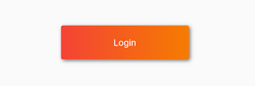

Flutter常用的布局组件
Contents
Flutter中有很多布局组件，看起来纷繁复杂，而实际上其中有很多布局组件都是“过时”的，也就是说它们都有更好更简单的替代品。下面就将我最近半年多Flutter开发中常用的布局组件做一个小归纳。
1.常用布局组件
Row
https://api.flutter.dev/flutter/widgets/Row-class.html
构造函数：
|
|
A widget that displays its children in a horizontal array.
- 如果你只有一个子元素要放置，那么考虑使用Align 或者 Center。
- 如果希望child占满Row主轴方向上的剩余空间，那么先使用Expanded包裹child，再把它放到Row中。
MainAxisAlignment的取值：
- start
- end
- center
- spaceBetween
- spaceAround
- spaceEvenly
CrossAxisAlignment的取值：
- start
- end
- center
- stretch
- baseline
Column
https://api.flutter.dev/flutter/widgets/Column-class.html
Column和Row非常类似，就是变了个方向而已，不再赘述。
Expanded
https://api.flutter.dev/flutter/widgets/Expanded-class.html
构造函数：
|
|
可以按比例扩伸Row、Column、Flex的子widget在Row、Column、Flex主轴方向上所占用的空间。
flex为弹性系数，如果为0或null，则child是没有弹性的，即不会被扩伸占用的空间。如果大于0，所有的Expanded会按照其flex的比例来分割主轴的全部剩余空间。
Row和Column是Flex的子类。
Wrap
https://api.flutter.dev/flutter/widgets/Wrap-class.html
构造函数：
|
|
流式布局。
在介绍Row和Colum时，如果子widget超出屏幕范围，则会报溢出错误。
可以认为Wrap和Flex（包括Row和Column）除了超出显示范围后Wrap会折行外，其它行为基本相同。
wrap在主轴副轴方向上的尺寸应该都是wrapContent。
Stack
https://api.flutter.dev/flutter/widgets/Stack-class.html
构造函数：
|
|
层叠布局，即该布局中的子元素可以堆叠放置。
Stack中可以包含未定位元素和已定位元素。已定位元素即被Positioned包裹（且Positioned的定位属性不全为null的）的元素。
Stack的默认尺寸为包裹所有未定位的子元素。大部分情况下，我们希望Stack能占满父元素的剩余空间，这时使用Container或SizedBox或ConstrainedBox包裹Stack即可：
|
|
Postioned
https://api.flutter.dev/flutter/widgets/Positioned-class.html
构造函数：
|
|
只能在Stack中使用，控制子元素在Stack中该如何定位。
left、top 、right、bottom分别代表子元素离Stack左、上、右、下四边的距离。width和height用于指定子元素的宽度和高度。
显然，Postioned的尺寸就是wrapContent。
示例：
|
|
Container
https://api.flutter.dev/flutter/widgets/Container-class.html
构造函数：
|
|
Container是多个widget组合而成的一个widget，可以部分或完全替代Center、SizedBox、DecoratedBox、ConstrainedBox、Transform、Padding、Align等widget的功能。
尺寸规则：
- 如果指定了Container的尺寸，但未指定alignment，那么Container会使子元素的尺寸等于Container的尺寸。
- 如果指定了Container的尺寸，也指定了alignment，那么子元素的尺寸不会变。
- 如果未指定Container的尺寸，也未指定alignment，那么Container的尺寸为wrapContent（子元素的尺寸不会变）。
- 如果未指定Container的尺寸，但指定了alignment——行为比较奇怪，不建议使用。
另外：
- 容器的大小可以通过
width、height属性来指定，也可以通过constraints来指定，如果同时存在时，width、height优先。实际上Container内部会根据width、height来生成一个constraints。 color和decoration是互斥的，实际上，当指定color时，Container内会自动创建一个decoration。
2.其他布局组件
AspectRatio：限制子widget的宽高比。
Baseline：A widget that positions its child according to the child’s baseline.
IndexedStack：A Stack that shows a single child from a list of children.The displayed child is the one with the given index. The stack is always as big as the largest child.
3.很少用的布局组件
这部分介绍的组件很少使用，通常是因为有了更好的替代品。
Flex
https://api.flutter.dev/flutter/widgets/Flex-class.html
构造函数：
|
|
参数和Row和Column基本一样，就是多了个direction——其实Row和Column就是direction分别取水平方向和竖直方向的Flex。一般使用Row和Column，不使用Flex。
Center
https://api.flutter.dev/flutter/widgets/Center-class.html
构造函数：Center({Key key, double widthFactor, double heightFactor, Widget child })
A widget that centers its child within itself.
- This widget will be as big as possible if its dimensions are constrained and widthFactor and heightFactor are null.——如果某个维度的尺寸有限制，且该维度的尺寸因子为null，那么该维度的尺寸会尽可能的大，这是最常用的场景。
- If a dimension is unconstrained and the corresponding size factor is null then the widget will match its child’s size in that dimension.——如果某个维度的尺寸没有限制，且该维度的尺寸因子为null，那么该维度的尺寸会是wrapContent效果。
- If a size factor is non-null then the corresponding dimension of this widget will be the product of the child’s dimension and the size factor. For example if widthFactor is 2.0 then the width of this widget will always be twice its child’s width.——如果某个维度的尺寸因子不为null，那么该维度的尺寸就是child的该维度尺寸乘以尺寸因子。
SizedBox
https://api.flutter.dev/flutter/widgets/SizedBox-class.html
构造函数：
|
|
A box with a specified size.
- 如果SizedBox有子元素，那么会使子元素的尺寸等于SizedBox的尺寸（已测试证实。这是最常用的场景☆，例如，按钮widget本身无法指定尺寸，如果想指定按钮的尺寸，那么可以在按钮外面包一层SizedBox）。
- 如果参数width或height为null，那么SizedBox在该维度的尺寸会等于子元素的尺寸。
ConstrainedBox
https://api.flutter.dev/flutter/widgets/ConstrainedBox-class.html
构造函数：
|
|
SizedBox实际上只是ConstainedBox的一个定制。
BoxConstraints的构造函数和用法：
|
|
DecoratedBox
https://api.flutter.dev/flutter/widgets/DecoratedBox-class.html
构造函数：
|
|
DecoratedBox可以在其子widget绘制前或后绘制一个装饰Decoration（如背景、边框、阴影、圆角等）。
BoxDecoration的构造函数：
|
|
显然，DecoratedBox的尺寸为wrapContent。
示例：
|
|

Padding
https://api.flutter.dev/flutter/widgets/Padding-class.html
构造函数：
|
|
Padding是一个自己带有padding的widget，实际就相当于给它的子元素加margin。
显然，Padding的尺寸为wrapContent。
Transform & RotatedBox
详见官方文档。